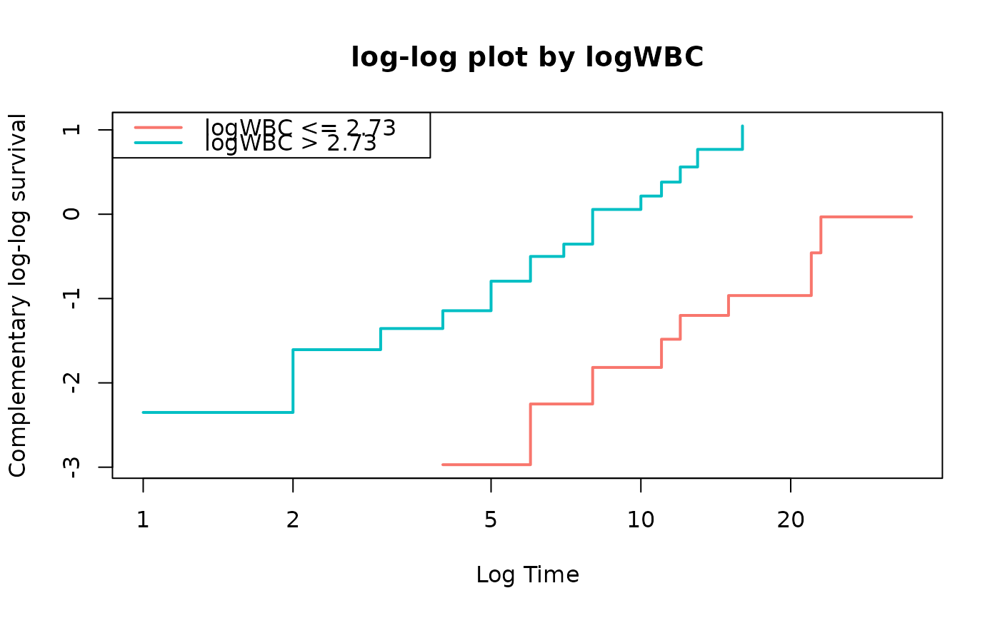
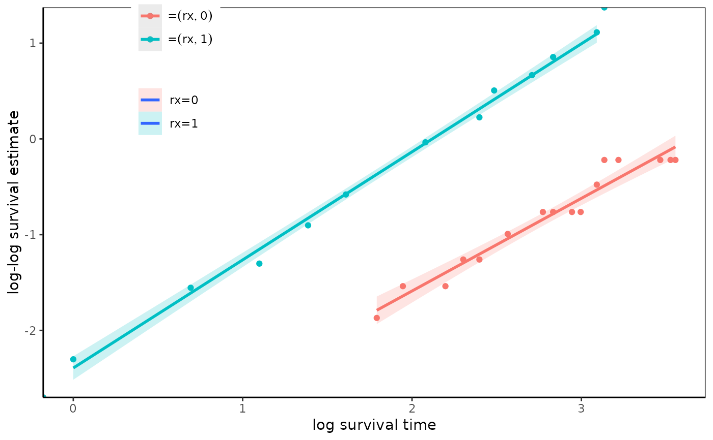
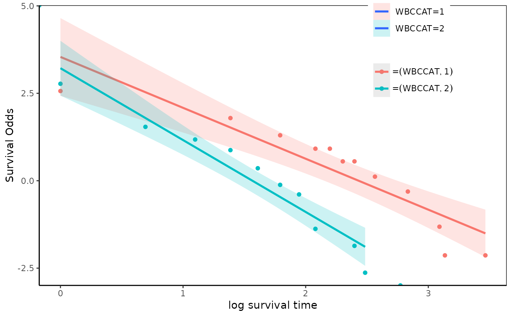
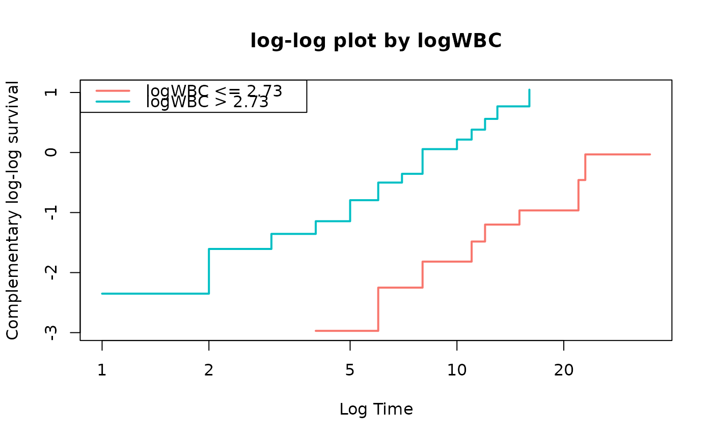
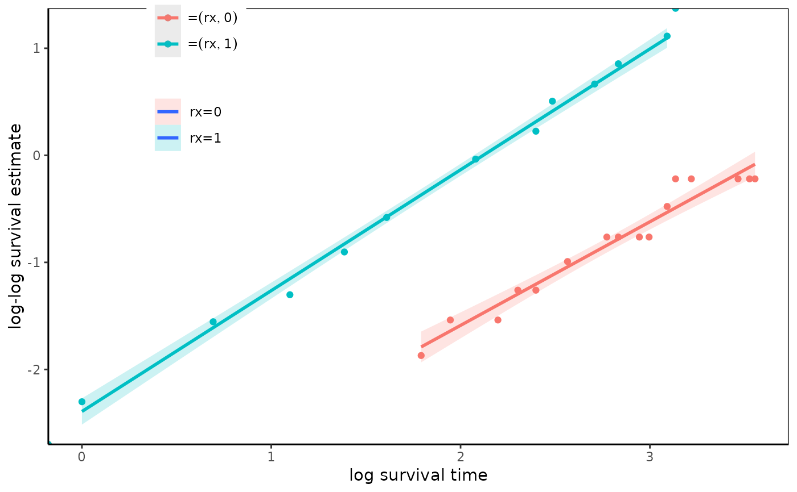
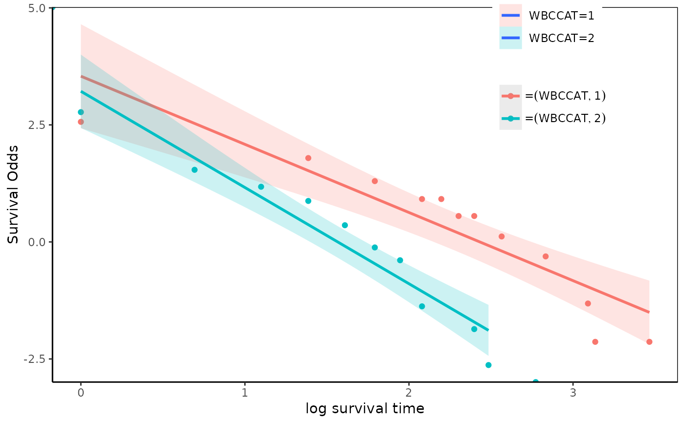

Draw log-log plot
Usage
loglogplot(
fit,
xnames = NULL,
main = NULL,
labels = NULL,
no = 3,
add.loess = FALSE,
add.lm = TRUE,
type = "l",
se = TRUE,
what = "surv",
legend.position = NULL,
...
)Arguments
- fit
An object of class "coxph" or "survfit"
- xnames
character Names of explanatory variable to plot
- main
String Title of plot
- labels
String vector Used as legend in legend
- no
Numeric The number of groups to be converted
- add.loess
logical If true, add loess regression line
- add.lm
logical If true, add linear regression line
- type
character "l" or "p"
- se
logical If true, add se
- what
character One of c("surv","survOdds","failureOdds")
- legend.position
legend position. One of c("left","top","bottom","right") or numeric vector of length 2.
- ...
Furhter arguments to be passed to plot()
Examples
require(survival)
data(cancer,package="survival")
fit=coxph(Surv(time,status)~x,data=leukemia)
loglogplot(fit)
 fit=survfit(Surv(time,status)~1,data=anderson)
loglogplot(fit)
fit=survfit(Surv(time,status)~sex,data=anderson)
loglogplot(fit)
fit=survfit(Surv(time,status)~1,data=anderson)
loglogplot(fit)
fit=survfit(Surv(time,status)~sex,data=anderson)
loglogplot(fit)
 fit=survfit(Surv(time,status)~logWBC,data=anderson)
loglogplot(fit)
fit=survfit(Surv(time,status)~logWBC,data=anderson)
loglogplot(fit)
 fit=survfit(Surv(time,status)~logWBC+rx,data=anderson)
loglogplot(fit,no=2)

fit=survfit(Surv(time,status)~rx,data=anderson)
loglogplot(fit,type="p")
#> Warning: Removed 3 rows containing non-finite values (stat_smooth).
fit=survfit(Surv(time,status)~WBCCAT,data=anderson2)
loglogplot(fit,type="p",what="survOdds")
#> Warning: Removed 3 rows containing non-finite values (stat_smooth).

loglogplot(fit,type="p",what="failureOdds")
#> Warning: Removed 3 rows containing non-finite values (stat_smooth).

fit=survfit(Surv(time,status)~logWBC+rx,data=anderson)
loglogplot(fit,no=2)

fit=survfit(Surv(time,status)~rx,data=anderson)
loglogplot(fit,type="p")
#> Warning: Removed 3 rows containing non-finite values (stat_smooth).
fit=survfit(Surv(time,status)~WBCCAT,data=anderson2)
loglogplot(fit,type="p",what="survOdds")
#> Warning: Removed 3 rows containing non-finite values (stat_smooth).

loglogplot(fit,type="p",what="failureOdds")
#> Warning: Removed 3 rows containing non-finite values (stat_smooth).
